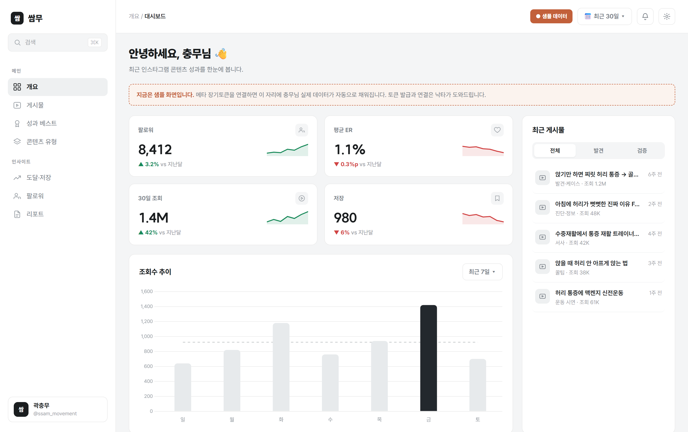

곽충무
브랜드·콘텐츠 전략 가이드라인
지금 계정은 조회수가 잘 나올수록 오히려 PT 구매와 멀어지는 구조에 놓여 있습니다. 이 문서가 하는 일은 타겟을 다시 정의하고, PT를 살 사람이 반응하는 계정으로 구조 전체를 바꾸는 것입니다.
먼저 분명히 해 둘 것이 있습니다. 충무님은 운동의 원리를 해부학적 근거로 풀어내는 사람이고, 그 콘텐츠는 이미 실력을 증명했습니다. 루마니안 데드리프트 콘텐츠는 참여율(ER) 8.33%, 벤치프레스 분석은 10.43%를 냈습니다. 이 문서는 충무님의 운동 지식도, 콘텐츠를 만드는 손도 의심하지 않습니다.
이 문서가 다루는 것은 콘텐츠를 더 잘 만드는 방법이 아닙니다. 지금의 콘텐츠가 누구를 불러 모으고 있는가, 그리고 그 사람이 PT를 살 사람인가입니다. 결론부터 말하면, 지금 계정은 조회수가 잘 나올수록 오히려 PT 구매와 멀어지는 구조에 놓여 있습니다. 이 문서가 하는 일은 타겟을 다시 정의하고, PT를 살 사람이 반응하는 계정으로 구조 전체를 바꾸는 것입니다.
사람들이 보는 모습, 데이터가 반응하는 것, 충무님이 스스로 인지하는 것을 차례로 본 다음, 그 셋이 어긋나는 지점을 정리하고, 마지막에 한 줄로 압축합니다.
현재
사람들이 보는 충무님
@ssam_movement에서 사람들이 충무님을 처음 만나는 자리는 운동 정보입니다. 루마니안 데드리프트를 어떻게 하는지, 벤치프레스에서 바벨이 어떻게 움직이는지를 해부학적 근거로 설명하는 콘텐츠입니다. 그 콘텐츠가 사람을 멈춰 세웁니다. 도달과 설명력은 이미 검증됐습니다.
그런데 이 콘텐츠가 불러 모으는 사람이 문제입니다. "루마니안 데드리프트 하는 법"을 검색하는 사람은 이미 혼자 운동하고 있고, 혼자 해결하려는 사람입니다. PT를 살 사람은 애초에 운동 팁을 찾지 않습니다. 그들은 "혼자 해봤는데 효과가 없다", "허리가 계속 아픈데 병원을 가도 안 낫는다"는 문제를 가진 사람들입니다. 지금 충무님의 콘텐츠는 앞의 사람을 부르고 있고, 뒤의 사람은 부르지 못하고 있습니다.
데이터가 반응하는 것
데이터도 같은 말을 합니다.
2월에 터진 루마니안 데드리프트 콘텐츠는 ER 8.33%, 벤치프레스 분석은 10.43%를 냈습니다. 운동명 검색으로 도달은 크게 열렸습니다. 그런데 이 도달이 팔로워나 관계로 축적됐다는 신호는 약합니다. 상반기 동안 월별 평균 참여율은 크게 내려앉았는데, 이 하락이 주제를 옮긴 탓인지 릴스 도달이 제자리로 돌아온 것인지는 아직 모릅니다. 답은 앞으로의 반응이 줍니다. 다만 개별 콘텐츠의 대비는 분명합니다. 운동명으로 연 콘텐츠는 스쿼트 16.5만, 손목 교정 15.9만 조회를 냈고, 검색해 들어온 사람은 답만 얻고 떠났습니다.
반대로 회원의 변화나 사람의 이야기를 담은 콘텐츠는 존재하지만 도달이 낮아 묻혀 있습니다. 즉 도달이 잘 되는 콘텐츠(운동 팁)와 구매로 이어지는 콘텐츠(회원 변화·서사)가 서로 반대 방향으로 움직이고 있습니다. 이것이 지금 계정의 핵심 구조입니다. 조회수가 잘 나올수록 PT 구매와 멀어지는 역설입니다.
실제 결과가 이를 그대로 보여줍니다. 6/6 대면에서 충무님이 직접 말한 그대로, 인스타로 유입된 회원이 거의 없습니다. 헬스보이짐에서 6만원을 받는 트레이너로서, 콘텐츠의 조회수는 나오는데 등록으로 이어지지 않습니다.
충무님이 스스로 인지하는 것
충무님이 원하는 것은 유입입니다. 고객 수를 먼저 채우고 그다음에 단가를 올린다는 순서를 그리고 있고, 방향 자체는 맞습니다. 다만 지금은 그 유입이 막혀 있습니다.
더 중요한 것은, 충무님이 자신의 문제를 이미 절반쯤 인지하고 있다는 점입니다. 무엇을 뚜렷하게 미는지가 애매하다는 것을 스스로 느끼고 있습니다. 센터에 소속되어 있다 보니 이 사람 저 사람의 요구를 다 맞추게 되고, 다이어트도 재활도 체형도 다 된다고 말하게 됩니다. 되기는 되지만 하나로 뾰족하지 않다는 것, 이것을 본인에게 가장 큰 고민으로 인지하고 있습니다.
문제의 결과(전환이 안 된다)는 알지만, 그 원인이 무엇인지를 아직 잡지 못한 상태입니다.
어긋남 — 세 가지가 만나는 지점
세 렌즈를 겹치면 한 곳으로 모입니다.
- 사람들이 보는 것: 운동 팁을 잘 주는 트레이너. 혼자 해결하려는 사람이 모인다.
- 데이터가 반응하는 것: 조회수는 나오는데 전환은 0. 도달과 구매가 반대로 설계돼 있다.
- 충무님이 원하는 것: 유입과 전환. 그런데 무엇으로 뾰족한지가 비어 있다.
원인은 콘텐츠가 약해서가 아닙니다. 타겟이 잘못 정의됐고, 전문성이 하나로 뾰족하지 않기 때문입니다. 운동 팁 검색자는 PT를 사지 않습니다. PT를 살 사람은 "혼자 해도, 병원을 가도 안 낫는" 사람입니다. 이 사람이 반응할 콘텐츠와 이 사람에게 팔 뾰족한 전문성을 정하는 것이 이 가이드라인이 하는 일입니다.
모순 — 한꺼번에 풀려던 것들
충무님이 막혀 있던 이유는 방법이 없어서가 아니라, 서로 당기는 방향을 한꺼번에 안고 있었기 때문입니다.
- 조회수가 잘 나오는 콘텐츠(운동 팁) ↔ 전환되는 콘텐츠(회원 변화·통증 해결)가 반대 방향
- 센터 유입(싼 것을 원하는 고객) ↔ 개인 브랜딩(8만 8천원을 내는 고객)
- 다 해줄 수 있다(다이어트·재활·체형) ↔ 하나로 뾰족해야 팔린다
- 다이어트로 넓게 잡기 ↔ 재활로 좁히기
이 모순들은 따로 풀 수 없습니다. 타겟과 전문성을 하나로 정하면 나머지가 함께 정리됩니다. 무엇을 뾰족하게 세울지가 정해지는 순간, 어떤 콘텐츠를 올릴지, 어떤 고객을 부를지, 얼마를 받을지가 따라옵니다.
한 줄 정체성 (도출)
무엇을 뾰족하게 세울지는, 원하는 것이 아니라 이미 검증된 자산 위에서 정합니다. 충무님의 자산을 펼치면 이렇습니다.
- 검증된 콘텐츠력(운동 원리를 쉽게 푸는 설명력)
- 수중재활 경험과 시작점 서사 — 충무님의 전공은 스포츠학과이고, 그 안에서 재활을 다뤘습니다. 커리어는 물속 재활에 관심을 두고 그 일을 해보다가 트레이너로 전향한 데서 출발했습니다. 물에서 하는 재활은 저항이 부드러워 통증·디스크·거동이 불편한 사람에게 맞는 영역이고, 이 시작점은 충무님이 처음부터 '통증이 있는 몸'을 다뤄 온 사람이라는 서사가 됩니다. 다만 이것은 자격이 아니라 이력이므로, 차별점의 무게는 아래 회원 변화 증거에 둡니다.
- 회원의 실제 변화 사례(예: 목 디스크로 수술을 앞둔 회원이 운동으로 한 달 만에 호전)
다이어트는 이제 시장성을 잃었습니다. 다이어트로 넓게 잡으면 비교 대상이 유튜브 무료 영상과 위고비가 되어, 6만원짜리 PT도 비싸 보입니다. 재활로 좁히면 비교 자체가 달라집니다. 재활은 값을 다투는 자리가 아니라, 낫지 않던 통증을 실제로 잡아주는 사람을 찾는 자리이기 때문입니다. 좁히는 것이 전환과 단가를 동시에 지키는데, 왜 지금 재활이 특히 유효한지는 PART 2에서 시장의 변화와 함께 봅니다.
그리고 그 재활을 남들과 가르는 것은 검증된 설명력과 실제 회원의 변화입니다. 수중재활은 자격이 아니라 시작점입니다 — 물속 재활에서 출발해, 고객이 닿기 어려운 그 원리를 물 밖으로 옮겨 왔다는 이야기. '처음부터 통증 있는 몸을 다뤄 온 사람', 그 한 줄이면 됩니다. 정작 남이 못 베끼는 건 회원의 변화고요. 왜 이 조합이 차별점인지는 PART 2에서 풉니다.
이 기준을 통과하는 한 줄은 다음과 같습니다.
근거 — 검증된 설명력과 실제 회원의 변화가 그 약속을 뒷받침하고, 물속 재활에서 출발한 이력이 '처음부터 통증을 다뤄 온 사람'이라는 서사를 더한다.
병원을 가도 낫지 않던 디스크와 통증을 가진 직장인이 이 약속에 반응합니다. 이 사람이 통증을 얕게 아는 트레이너가 아니라는 데서 멈추고, 회원의 변화에서 신뢰를 얻어 찾아옵니다. 운동 팁에서 사람으로 가면 지금처럼 정보 채널이 되고, 통증과 사람에서 전문성으로 가면 찾아오는 채널이 됩니다.
방향과 수익성
앞의 진단이 무엇이 막혀 있는지를 봤다면, 이 파트는 그래서 어디로 가야 하는지, 그리고 그 길이 왜 지금 특히 열려 있는지를 봅니다. 아직 방향에 확신이 서지 않았을 때는, 무엇을 하라는 지시보다 왜 이 길이어야 하는지에 대한 납득이 먼저입니다. 그래서 이 파트는 조금 길게, 근거를 하나씩 짚으며 갑니다.
충무님의 차별점 — 무엇으로 다른 사람이 되는가
몇 년 전만 해도 개인 트레이너의 상품은 두 축으로 팔렸습니다. 살을 빼주는 것, 그리고 운동을 알려주는 것입니다. 지금은 이 두 축이 모두 흔들리고 있습니다. 충무님의 전환이 막힌 것은 콘텐츠를 못 만들어서가 아니라, 팔던 자리 자체가 무너지고 있기 때문입니다. 순서대로 봅니다.
첫째, 다이어트는 더 이상 트레이너의 상품이 아닙니다. 사람의 욕망은 언제나 쉽게 빼는 쪽으로 움직입니다. 예전에는 그 방법이 운동밖에 없어서 PT가 팔렸지만, 지금은 위고비와 삭센다 같은 약이 더 쉽고 확실한 감량을 가져갔습니다. 운동으로 빼야 건강하다는 말은 전문가에게는 맞지만, 시장에서는 약이 이깁니다. 그래서 다이어트를 시켜주는 트레이너의 비교 대상이 약과 무료 유튜브가 되고, 이 비교에서 6만원은 더 비싸고 더 힘든 선택지가 됩니다. 다이어트로 포지셔닝하는 순간 가격을 지킬 수가 없습니다.
둘째, 운동을 알려주는 것도 팔리지 않습니다. 운동 정보는 이미 넘칩니다. 유튜브와 릴스에 무한히 있고, 이제는 AI에게 물어도 루틴을 짜줍니다. 정보의 값은 0에 가까워졌습니다. 게다가 정보성 콘텐츠는 구조적으로 전환과 반대로 움직입니다. 충무님의 콘텐츠가 저장이 잘 되는 것이 그 증거입니다. 저장은 나중에 나 혼자 해봐야지라는 신호이고, 이것은 혼자 해결하려는 사람의 반응입니다. 즉 잘 만든 정보성 콘텐츠일수록 혼자 할 사람을 모으고, PT를 살 사람과는 멀어집니다.
그렇다면 PT는 이제 무엇으로 팔리는가. 정보로도 약으로도 무료 콘텐츠로도 해결되지 않는 문제, 그것 하나만 남습니다. 사람이 돈을 내고 사람을 찾아오는 유일한 이유는 혼자 해봤는데 안 되고, 병원을 가봐도 안 낫는 문제가 있을 때입니다. 그 문제가 통증이고 재활입니다. 위고비는 통증을 못 고치고, 유튜브는 내 몸을 못 보고, AI는 손을 못 씁니다. 재활이 PT의 상품성이 유일하게 살아있는 자리인 이유입니다.
그래서 충무님이 설 자리는 통증과 재활에 전문성을 가진 트레이너입니다. 특별한 종목으로 갈아타는 것이 아니라, 지금 하는 PT를 하되 혼자 해도 병원을 가도 낫지 않는 통증을 다루는 사람으로 좁히는 것입니다. 문제는 재활을 표방하는 트레이너도 이제 적지 않다는 점입니다. 재활이라는 말만으로는 충무님이 다른 트레이너와 어떻게 다른지가 드러나지 않습니다. 여기서 충무님에게는 남들이 갖지 못한 이력이 하나 있습니다. 수중재활입니다.
수중재활이 왜 차별점이 되는지 짚고 갑니다. 수중재활은 일반 재활운동조차 버거운 사람을 물의 부력으로 받쳐 가며 진행하는 재활입니다. 통증이 심하거나 거동이 어려운 사람이 대상이고요. 그 영역에서 커리어를 시작한 사람이라는 사실은, 충무님이 통증을 얕게만 아는 트레이너가 아니라 처음부터 통증 있는 몸을 다뤄 온 사람이라는 서사가 됩니다. 디스크나 나이 든 몸엔 물속 운동이 좋다 — 이 인식은 이미 깔려 있고, '수중재활'이라는 말 한마디가 그걸 건드립니다. 충무님이 노리는 직장인의 통증과도 맞물리고요.
실제로 물속에서 진행하려면 수영장이 필요해 접근이 어렵다는 한계가 있지만, 이것은 약점이 아니라 이야기가 됩니다. 물속 재활에서 출발했는데 고객이 접근하기 어려워, 그 원리를 물 밖의 재활 운동으로 옮겨 왔다는 것입니다. 다만 이 이력을 자격처럼 앞세우면 곧 그만큼의 깊이를 검증받게 됩니다. 그래서 이력은 시작점 서사로 쓰되, 충무님을 실제로 세우는 것은 회원의 변화라는 점을 잊지 않습니다(2-3 참조).
왜 지금인가 — 도수치료 시장의 변화
이 자리는 마침 지금 크게 열리고 있습니다. 2026년 7월부터 도수치료가 건강보험 관리급여로 전환됐고, 그동안 만성 통증이나 디스크로 도수치료를 반복해 받던 사람들에게 여러 가지가 한꺼번에 바뀌었습니다. 한 사람이 받을 수 있는 횟수가 연 15회로 제한됐고, 도수치료를 받기 전에 일반 물리치료를 먼저 거치도록 요건이 생겼으며, 관리급여로 바뀐 비용은 실손보험으로 돌려받기 어려워졌습니다. 2026년 5월에 나온 새 실손보험은 도수치료를 아예 보장하지 않습니다.
동시에 병원 쪽 사정도 바뀝니다. 도수치료는 그동안 병원의 대표적인 비급여 수입원이었는데, 가격이 정해지고 실손 청구가 막히면서 예전만큼의 수익이 나오지 않습니다. 병원이 도수치료를 적극적으로 권하던 동력이 약해진다는 뜻입니다.
정리하면, 도수치료로 통증을 관리하던 익숙한 통로가 환자 쪽에서도 병원 쪽에서도 동시에 좁아지고 있습니다. 물론 이 사람들이 전부 운동으로 오지는 않습니다. 다른 시술로 옮겨가는 사람도 있을 것입니다. 그러나 분명한 것은, 도수치료는 그때의 통증을 덜어주는 제한된 치료이지 통증의 근본을 고치는 치료가 아니라는 사실이 제도로 확인됐다는 점입니다. 통증의 근본은 결국 움직임이고, 그 자리를 채우는 것이 재활 트레이너입니다.
정보와 약이 공짜로 대신하게 된 것은 팔 수 없고, 그것들이 끝내 못 고치는 것만 팔립니다. 충무님의 자리는 후자이며, 물속 재활에서 출발한 이력이 그 방향에 서사를 더하고, 회원의 변화가 그 자리를 증거로 채웁니다. 그리고 그 자리는 마침 지금 가장 크게 비어 가고 있습니다.
브랜딩과 동시에 — 이건 기본값입니다
한 가지는 분명히 하고 갑니다. 이 포지셔닝은 충무님이 실제로 그 사람이 되는 것을 전제로 합니다. 통증과 재활에 전문성을 가진 트레이너라는 자리는, 내거는 순간 그만큼의 깊이를 요구합니다. 재활 쪽을 기술적으로 더 깊이 뒷받침해야 한다는 뜻입니다. 통증과 디스크의 원리를 실제로 파고들고, 충무님만의 진단과 교정, 운동 설계로 이어지는 프로그램을 직접 만들어야 합니다. 이것은 이 전략과 별개의 숙제가 아니라, 전략이 서는 바닥입니다.
이 기술적 뒷받침이 곧 방어막입니다. 콘텐츠는 누구나 베낄 수 있지만, 실제 프로그램과 회원의 변화는 베낄 수 없습니다. 지금 충무님에게 개인 자산이 얇다는 것은, 뒤집으면 이 깊이를 쌓는 순간 아무도 못 따라오는 자리가 된다는 뜻입니다. 브랜딩은 약속을 만들고, 실력은 그 약속을 지킵니다. 이 둘은 같이 갑니다.
수익성 — 이 방향이 어떻게 돈이 되는가
충무님이 결국 걱정하는 것은 이것으로 돈을 벌 수 있느냐입니다. 지금 6만원을 받고 있고, 언젠가 단가를 올리고 싶어 합니다. 이 방향이 그것을 어떻게 가능하게 하는지 봅니다.
먼저 가격은 실력의 문제이기 이전에 자리의 문제입니다. 같은 한 시간을 팔아도, 운동을 다 잘 시켜주는 트레이너의 한 시간과 통증과 재활에 전문성을 가진 트레이너의 한 시간은 다른 값으로 읽힙니다. 앞의 사람은 비교 대상이 넘쳐서 가격으로 경쟁하고, 뒤의 사람은 비교 대상이 없어서 가격을 스스로 정합니다. 그래서 단가를 올리는 길은 시간당 요금을 올리는 것이 아니라, 시간의 값이 결과의 값으로 읽히도록 자리를 옮기는 것입니다.
그 자리는 콘텐츠가 만듭니다. 충무님의 피드에 통증을 실제로 해결한 회원의 변화가 쌓이면, 사람들은 한 시간에 얼마가 아니라 내 허리를 잡아준 사람으로 충무님을 보게 됩니다. 6/6에서 충무님이 직접 말한 경로가 이것입니다. 재활 콘텐츠를 보고 온 고객에게는 8만 8천원을 받을 수 있다는 것. 같은 사람이 같은 시간을 파는데, 다이어트를 보고 온 고객에게는 6만원도 비싸고 재활을 보고 온 고객에게는 8만 8천원이 납득되는 이유가 여기 있습니다.
앞서 본 시장의 변화가 이 값을 뒷받침합니다. 도수치료가 횟수와 비용의 벽에 부딪히는 지금, 낫지 않던 통증을 근본부터 잡아준다는 자리의 값은 오히려 올라갑니다. 사람들은 반복되는 대증치료보다 한 번 제대로 잡아주는 사람에게 더 지불할 의사가 있기 때문입니다.
한 가지는 분명히 합니다. 이 가격은 하루아침에 오르지 않습니다. 회원의 변화가 콘텐츠로 쌓이고, 그 증거가 신뢰가 되는 만큼 오릅니다. 그래서 수익성의 핵심은 요금표가 아니라, 결과를 증거로 남기는 습관입니다. 무엇을 남길지는 뒤의 콘텐츠 설계에서 다룹니다.
6만원도 비싸게 읽힙니다
같은 시간이 결과의 값으로 읽힙니다
왜 지금 브랜드를 쌓아야 하는가 — 센터 구조와 다음 자리
한 가지는 짚고 갑니다. 정산 몫이 고정이라, 여긴 단가가 아니라 수업 수로 승부하는 구조입니다. 그래서 재활 브랜딩이 더 급합니다.
콘텐츠로 쌓는 전문성은 이번 달 월급이 아니라 다음 자리를 위한 투자입니다. 독립하거나 센터를 여는 순간, 그 이름값이 몇 달의 수입 공백을 메웁니다. 지금 개인 유입이 거의 없다는 것도, 뒤집으면 이 브랜드가 센터에 기대지 않는 첫 유입 경로가 된다는 뜻입니다.
지금 쌓는 브랜드가 다음 자리의 값입니다.
스스로 답을 찾아가는 방법
앞에서 방향을 정했습니다. 통증과 재활에 전문성을 가진 트레이너로 서고, 수중재활 이력을 차별점으로 앞세운다는 것입니다. 그런데 이 방향을 실제로 채우는 세부, 그러니까 정확히 어떤 통증의 사람을 노릴지, 얼마까지 받을 수 있을지, 무엇이 충무님만의 차별점인지, 어떤 콘텐츠가 실제로 손님을 데려오는지는 지금 자리에서 한 번에 정해지지 않습니다. 이것들은 충무님이 현장에서 회원을 만나며 계속 찾아가야 하는 답입니다.
그래서 이 파트는 완성된 답을 주는 대신, 그 답을 스스로 찾는 방법을 둡니다. 한 번 쓰고 마는 것이 아니라, 반년 뒤에도 방향을 다시 점검할 수 있는 도구입니다. 네 가지입니다.
방향을 찾는 법 — 오래 남은 회원을 되짚는다
가장 뾰족한 니치의 단서는 이미 충무님의 회원 안에 있습니다. 오래 다닌 회원, 그만두었다 다시 온 회원, 주변에 소개까지 한 회원을 떠올립니다. 그리고 이들이 처음 어떤 문제로 왔는지, 무엇 때문에 남았는지를 되짚습니다. 만족도가 높은 회원들에게서 공통점이 보이면, 그것이 충무님이 좁혀야 할 방향입니다.
이것은 충무님이 이미 감으로 아는 것을 눈에 보이게 만드는 일입니다. 오래 남은 회원 다수가 앉아서 일하는 직장인의 허리 통증이었다면, 막연한 재활이 아니라 그 통증이 니치가 됩니다. 감으로 흩어져 있던 것을 회원 명단에서 확인하는 것, 그것이 방향을 정하는 가장 확실한 근거입니다.
가격을 찾는 법 — 그들이 전에 어디에 얼마를 썼는지 본다
얼마까지 받을 수 있는가는 짐작으로 정할 수 없습니다. 근거는 만족도가 높은 회원의 지갑에 있습니다. 이들이 충무님을 만나기 전에 같은 통증에 어디서 무엇을 얼마에 받았는지를 보면 됩니다. 도수치료에 얼마를 썼는지, 필라테스나 다른 PT에 얼마를 냈는지, 병원에는 얼마를 들였는지입니다.
사람은 이미 써 본 만큼의 금액에는 다시 지갑을 엽니다. 만족 회원 다수가 같은 통증에 매달 상당한 돈을 써 온 사람들이라면, 충무님의 단가가 6만원에 머물 이유가 없습니다. 가격의 상한은 충무님의 경력이 아니라, 그 회원들이 같은 문제에 이미 지불해 온 금액이 알려줍니다.
차별점을 찾는 법 — "왜 저한테 오셨어요"를 모은다
충무님만의 차별점은 충무님이 정하는 것이 아니라 회원이 알려줍니다. 새로 등록한 회원에게, 혹은 상담 자리에서, 왜 다른 곳이 아니라 여기로 왔는지를 묻고 그 답을 모읍니다. 처음에는 흩어진 대답처럼 보이지만, 20명쯤 쌓이면 반복되는 말이 드러납니다. 그 반복되는 한마디가 충무님의 차별점입니다.
이 방법이 중요한 이유는, 충무님이 스스로 강점이라 여기는 것과 회원이 실제로 지갑을 여는 이유가 다를 수 있기 때문입니다. 회원의 입에서 반복되는 이유는 지어낼 수 없는 진짜 차별점이고, 그대로 콘텐츠의 메시지가 됩니다.
전환되는 콘텐츠를 찾는 법 — 저장과 문의를 갈라 본다
앞에서 봤듯이, 충무님의 콘텐츠는 저장은 잘 되지만 그것이 전환과는 반대 방향입니다. 저장은 혼자 해보겠다는 신호이기 때문입니다. 그래서 콘텐츠의 성패를 조회수나 저장으로 재면 방향을 잘못 잡게 됩니다.
봐야 할 것은 하나입니다. 어떤 콘텐츠가 저장으로 끝났고, 어떤 콘텐츠가 디엠이나 문의로 이어졌는가. 이 둘을 나눠서 기록합니다. 문의를 부른 콘텐츠에는 공통점이 있을 것이고, 그것이 충무님이 늘려야 할 콘텐츠입니다. 지표를 저장에서 문의로 바꾸는 것, 이 하나가 콘텐츠의 방향을 전환 쪽으로 돌려놓습니다.
이 도구들을 습관으로
네 가지는 한 번의 조사로 끝나지 않습니다. 회원은 계속 바뀌고, 반응도 계속 쌓입니다. 그래서 이 방법들은 충무님이 분기마다 한 번씩 되짚는 습관이 될 때 가장 강합니다. 방향과 가격과 차별점은 한 번 정하고 끝나는 것이 아니라, 회원이 알려주는 대로 계속 선명해지는 것입니다.
누구를 부를 것인가
방향을 정했으니, 이제 그 방향이 실제 계정으로 내려오는 부분입니다. 먼저 정할 것은 콘텐츠가 아니라 타겟입니다. 누구를 부르는지가 정해져야 무엇을 올릴지가 따라오기 때문입니다.
지금 계정이 막힌 자리 — 유형 진단
콘텐츠로 매출이 막히는 계정은 몇 가지 유형으로 나뉩니다. 충무님의 계정은 그중 첫 번째, 조회수는 나오는데 매출로 이어지지 않는 유형입니다. 이 유형의 계정을 뜯어보면 공통점이 있습니다. 사람을 멈춰 세우는 콘텐츠는 많은데, 그 사람에게 "이 사람이라면 내 문제를 해결해 주겠다"는 판단을 주는 콘텐츠가 없다는 것입니다.
앞의 진단과 정확히 맞물립니다. 충무님의 운동 팁 콘텐츠는 사람을 멈춰 세우는 데는 성공합니다. 하지만 멈춰 선 사람이 다음 단계로 가지 않습니다. "이 트레이너가 내 통증을 잡아줄 사람"이라는 확신을 주는 콘텐츠가 피드에 거의 없기 때문입니다. 멈추게 하는 힘은 넘치는데, 믿게 하는 힘이 비어 있는 계정입니다.
이 유형에는 한 가지 함정이 더 있습니다. 지금 계정을 보고 있는 팔로워가 정말 PT를 살 사람인지 점검해야 한다는 것입니다. 운동명을 검색해 들어온 사람은 대부분 혼자 운동하는 사람이고, 통증을 돈 주고 해결할 생각이 있는 사람이 아닙니다. 조회수와 저장이 아무리 높아도, 그 숫자를 만든 사람이 애초에 고객이 아니면 전환은 일어나지 않습니다. 그래서 타겟을 다시 정의하는 일이 콘텐츠를 바꾸는 일보다 먼저입니다.
부를 사람 — "혼자 해도, 병원을 가도 안 낫는 직장인"
PART 1에서 정리한 그대로입니다. 충무님이 불러야 할 사람은 운동 팁을 찾는 사람이 아니라, 혼자 해봐도 낫지 않고 병원을 가봐도 낫지 않는 통증을 가진 직장인입니다. 하루 대부분을 앉아서 일하고, 허리나 목이 계속 아프고, 도수치료나 물리치료를 받아봤지만 그때뿐이었던 사람입니다.
여기서 중요한 것은 이 사람을 부를 때 쓰는 언어입니다. 이 사람은 자기 문제를 의학 용어로 이해하고 있지 않습니다. "상지교차증후군"이나 "전방 경사"라는 말에는 반응하지 않습니다. 자기가 그런지도 모르기 때문입니다. 이 사람이 반응하는 것은 자기가 실제로 겪는 방식으로 쓰인 말입니다. "하루 종일 앉아 있으면 저녁엔 허리가 안 펴진다", "아침에 목이 뻐근해서 잠을 설친다", "병원에서 도수치료를 받아도 며칠이면 돌아온다" 같은, 상담 자리에서 회원이 실제로 하는 말입니다.
콘텐츠의 첫 문장은 이 언어로 열어야 합니다. 운동 이름이 아니라, 이 사람이 자기 몸에서 느끼는 증상으로 여는 것입니다. 그래야 스크롤하던 손이 "어, 이거 내 얘긴데"에서 멈춥니다.
무엇으로 다른가 — 기본값과 차별점
부를 사람이 정해지면, 그 사람에게 충무님이 어떤 사람으로 보여야 하는지가 두 층으로 갈립니다.
기본값은 통증과 재활을 다루는 트레이너라는 자리입니다. 이건 충무님만의 것이 아니라, 이 시장에서 살아남으려는 트레이너라면 갖춰야 할 최소치입니다. 재활을 표방하는 트레이너는 이미 적지 않습니다. 기본값만으로는 묻힙니다.
차별점은 그 위에 얹히는 두 가지입니다. 하나는 이미 검증된 설명력이고, 다른 하나는 실제로 통증을 해결한 회원의 변화입니다. 여기에 물속 재활에서 출발했다는 이력이 '처음부터 통증을 다뤄 온 사람'이라는 시작점 서사를 더합니다. 재활을 표방하는 트레이너는 많지만, 실제 회원의 변화를 증거로 쌓은 사람은 드뭅니다. 콘텐츠와 이력은 흉내 낼 수 있지만, 통증을 해결한 회원의 변화는 베낄 수 없습니다. 이 세 가지 — 검증된 설명력, 회원 변화 증거, 그리고 물속 재활에서 출발한 서사 — 가 충무님만의 자리를 만듭니다.
정리하면 이렇습니다. 부를 사람은 낫지 않는 통증의 직장인, 세울 무기는 설명력과 회원 변화, 수중재활은 그 시작점 서사입니다. 이 정의가 이후 모든 콘텐츠의 기준선이 됩니다.
무엇을 올릴 것인가
타겟이 정해졌으니 콘텐츠를 봅니다. 여기서 먼저 짚을 것은, 충무님의 문제가 콘텐츠를 못 만들어서가 아니라 한 종류의 콘텐츠만 만들고 있어서라는 점입니다.
콘텐츠에는 세 가지 역할이 있다
사람이 낯선 트레이너에게 돈을 내기까지는 세 단계를 거칩니다. 먼저 그 사람을 발견하고(1단계), 이 사람이 믿을 만한지 확인하고(2단계), 그다음에 가기로 결정합니다(3단계). 콘텐츠도 이 세 단계에 각각 대응하는 역할이 있습니다.
세 역할은 서로를 대신하지 못합니다. 2단계 없이 1단계에서 3단계로 건너뛸 수 없습니다. 멈춰 서기만 하고 믿지 못한 사람은 저장만 하고 떠나기 때문입니다.
지금 충무님의 콘텐츠는 한쪽으로 쏠려 있다
충무님의 피드는 1단계 콘텐츠, 즉 멈춰 세우는 운동 팁이 대부분을 차지합니다. 반대로 2단계(회원의 변화, 통증을 해결한 과정, 충무님의 진단 방식)와 3단계(어디서 어떻게 받을 수 있는지)는 거의 없습니다.
이것이 조회수는 나오는데 전환이 0인 구조의 정확한 정체입니다. 멈춰 세우는 힘은 넘치는데, 그 뒤를 받아줄 믿게 하는 콘텐츠가 없으니, 멈춘 사람이 저장만 하고 흩어집니다. 콘텐츠를 더 잘 만드는 것으로는 이게 해결되지 않습니다. 잘 만든 1단계 콘텐츠를 하나 더 올릴수록 저장만 늘 뿐입니다. 필요한 것은 비어 있는 2단계를 채우는 일입니다.
비중을 다시 잡는다
잘 굴러가는 계정은 세 역할이 대략 4:4:2로 균형을 이룹니다. 발견 4, 검증 4, 전환 2입니다. 발견과 검증이 같은 무게이고, 전환은 그보다 가볍습니다. 신뢰가 충분히 쌓이면 전환은 많은 콘텐츠 없이도 일어나기 때문입니다.
충무님의 지금 배치는 발견 쪽으로 크게 쏠려 있습니다. 당장 해야 할 일은 새로운 것을 배우는 게 아니라, 이미 잘하는 발견 콘텐츠의 일부를 검증 콘텐츠로 옮기는 것입니다. 다음 파트에서 그 검증 콘텐츠를 실제로 어떻게 만드는지를 봅니다.
어떻게 만들 것인가
순서를 뒤집는다 — 무엇을 올릴지가 아니라 무엇을 느끼게 할지부터
콘텐츠가 막히는 가장 흔한 이유는 "오늘 뭘 올리지?"부터 생각하기 때문입니다. 소재부터 고르면 늘 하던 운동 팁으로 돌아갑니다. 순서를 뒤집어야 합니다.
먼저 정할 것은 이 콘텐츠를 본 사람이 무엇을 느꼈으면 하는가입니다. 세 단계 중 지금 필요한 것이 발견인지 검증인지 전환인지를 먼저 정합니다. 그다음에 그 느낌을 만들 사람(누가 나오는가)을 정하고, 마지막에 상황(무엇을 보여주는가)을 정합니다. 느낌을 먼저 정하면 소재가 저절로 따라옵니다.
콘텐츠는 결국 누가 + 무엇을 = 어떤 느낌의 구조입니다. 대부분은 "무엇을"(어떤 운동, 어떤 정보)만 고민하지만, 실제로 사람을 움직이는 것은 "누가"와 그 결과 남는 "느낌"인 경우가 많습니다. 충무님이 지금 강한 것은 "무엇을"이고, 비어 있는 것은 "누가"와 "느낌"입니다.
검증 콘텐츠를 만드는 법 — 충무님이 채워야 할 자리
가장 급한 것은 비어 있는 검증 콘텐츠입니다. 검증 콘텐츠의 핵심은 "이 사람이라면 내 통증을 잡아주겠다"는 신뢰를 만드는 것이고, 이를 만드는 재료는 두 가지입니다.
하나는 회원의 변화입니다. 충무님에게는 이미 소재가 있습니다. 목 디스크로 수술을 앞뒀던 회원이 운동으로 한 달 만에 호전된 사례, 데드리프트에서 허리가 아파 피하던 회원이 몇 회 만에 무게를 다시 든 사례 같은 것들입니다. 이걸 그냥 "회원님 후기"로 올리면 약합니다. 다음 흐름으로 풀어야 신뢰가 됩니다.
다른 하나는 충무님의 전문성입니다. 여기서 물속 재활에서 출발한 이력이 힘을 씁니다. 단, "가장 어려운 재활"처럼 깊이를 곧바로 검증받게 되는 권위 주장은 피하고, "왜 통증·재활을 다루게 됐는지", "물에서 쓰던 원리를 어떻게 물 밖 운동으로 옮겼는지" 같은 시작점 이야기로 풉니다. 이건 충무님이 처음부터 통증 있는 몸을 봐 온 사람이라는 것을 보여줍니다. 이런 콘텐츠는 자주 올릴 필요가 없습니다. 자리를 잡아두는 콘텐츠라, 몇 개만 잘 만들어 고정해 두면 오래 효과를 냅니다.
발견 콘텐츠는 방향만 틀면 된다
발견 콘텐츠는 이미 잘 만들고 있으니 새로 배울 게 없습니다. 다만 여는 방식을 운동 이름에서 타겟의 증상으로 바꿉니다. "루마니안 데드리프트 하는 법"이 아니라 "하루 종일 앉아 있으면 허리가 안 펴지는 분"으로 여는 것입니다. 같은 운동 지식을 담더라도, 운동명으로 열면 혼자 할 사람이 모이고 증상으로 열면 통증을 가진 사람이 모입니다. 부르는 사람이 달라집니다.
전환 콘텐츠는 무겁지 않게
전환 콘텐츠는 비중이 가장 작습니다. 어디서 받을 수 있는지, 어떻게 상담을 신청하는지, 자주 묻는 질문에 대한 답 정도면 충분합니다. 앞의 검증이 충분히 쌓이면, 전환은 요란한 할인 없이도 일어납니다. 오히려 신뢰 없이 "지금 등록하세요"만 반복하는 것이 전환을 막습니다.
문의를 받는 배관 — 관심이 샐 곳 없게
전환이 요란하지 않아도 되는 것과, 문의를 받을 그릇이 없는 것은 다릅니다. 지금 계정에는 관심이 흘러들 배관이 비어 있습니다. 두 가지를 채웁니다.
- 프로필. 바이오 네 줄 — 누구를(낫지 않는 직장인 통증) / 무엇을(재활로 잡아준다) / 어디서(지역·센터) / 어떻게 연락(문의·예약). 하이라이트 하나는 회원 변화 아카이브로 고정합니다. 콘텐츠를 보고 온 사람이 '여기 가면 되겠다'를 확인하는 자리입니다.
- DM·상담 동선. 릴스 끝과 캡션에 '허리 통증 상담은 DM' 한 줄. DM이 오면 바로 팔지 말고, 증상을 한두 개 묻고 상담이나 체험으로 잇는 짧은 스크립트를 미리 만들어 둡니다.
이 배관이 있어야 앞의 발견·검증이 문의로 도착합니다. 없으면 아무리 잘 만들어도 저장에서 끝납니다.
목소리는 새로 만들지 않습니다 — 충무님이 이미 하는 방식
콘텐츠의 말투를 따로 지어낼 필요는 없습니다. 충무님이 회원에게 운동을 설명하는 방식이 이미 콘텐츠의 목소리입니다. 어려운 것을 쉽게 풀고, 모르는 것은 모른다고 하고, 과장하지 않는 태도입니다. 실제로 충무님은 잘된 콘텐츠를 두고도 "솔직히 왜 잘됐는지 모르겠다"고 말할 만큼 부풀리지 않는 사람입니다. 이 정직함이 재활이라는 주제에서는 오히려 강점입니다. 통증을 다루는 사람에게 사람들이 원하는 건 화려한 말이 아니라 믿을 수 있는 태도이기 때문입니다. 콘텐츠에서 지켜야 할 것은 세련된 편집이 아니라, 회원 앞에서 말할 때의 그 담백함입니다. 편집이 매끄럽지 않아도 이 태도가 있으면 신뢰는 쌓입니다.
무엇을 쌓아둘 것인가
콘텐츠를 계속 만들려면 매번 새로 짜내는 게 아니라, 재사용할 재료를 미리 쌓아두는 편이 낫습니다. 충무님이 모아둘 재료는 세 묶음입니다. 앞서 콘텐츠의 힘은 "누가"에서 나온다고 했는데, 이 세 묶음이 바로 그 "누가"를 채우는 재료입니다.
- 전문성 재료 (권위). 수중재활 이력, 충무님만의 진단 방식, 통증을 보는 관점과 원칙. "이 사람은 이 주제를 나보다 잘 안다"는 인상을 만드는 재료입니다. 몇 개만 잘 정리해 두면 오래 씁니다.
- 타겟 재료 (공감). 상담 자리에서 회원이 실제로 하는 말, 통증의 표현, 병원에서 겪은 일. 발견 콘텐츠의 첫 문장이 여기서 나옵니다. 회원을 만날 때마다 한 줄씩 메모해 두면 쌓입니다.
- 변화 재료 (신뢰). 회원의 처음과 나중, 그 사이에 무엇을 했는지. 검증 콘텐츠의 뼈대입니다. 회원의 동의를 받아 기록으로 남기는 습관이 곧 자산이 됩니다.
이 세 묶음은 따로 시간을 내서 만드는 게 아니라, 회원을 만나는 현장에서 한 줄씩 적립하는 것입니다. 콘텐츠를 위한 별도 작업이 아니라, 이미 하고 있는 일을 기록으로 남기는 것뿐입니다.
실행 로드맵
방향이 아무리 좋아도 올리지 않으면 결과는 0입니다. 그래서 마지막 실무는 무엇을 언제 올리느냐입니다. 지금 충무님에게 필요한 것은 대단한 기획력이 아니라, 부담이 낮은 것부터 주 단위로 꾸준히 올리는 리듬입니다. 아래는 그 리듬을 잡는 제안입니다. 게시 주기는 충무님의 사정에 맞춰 조정하되, 순서와 구성의 원리는 그대로 가져가면 됩니다.
꾸준함의 핵심 — 기획은 발상이 아니라 회원과의 매칭
콘텐츠가 끊기는 것은 게을러서가 아니라, 매번 무엇을 만들지 백지에서 짜내려 하기 때문입니다. 발상은 금방 고갈됩니다. 충무님의 경우 이 문제를 구조적으로 피할 수 있습니다. 소재가 매일 눈앞으로 걸어 들어오기 때문입니다.
- 회원이 곧 소재다. 오늘 온 회원이 어떤 통증으로 왔고 무엇 때문에 나아졌는지가 이미 검증 콘텐츠 한 편입니다. 매일 회원을 만나는 한 소재가 마를 수 없습니다.
- 포맷은 세 가지 중에서 고른다. 발견·검증·전환, PART 5에서 정한 세 역할 중 이번에 무엇을 채울지 고르기만 하면 됩니다. 매번 새로 발명하지 않습니다.
- 하나의 소재를 둘로 나눈다. 회원 한 명의 사례를 검증 콘텐츠(통증을 해결한 과정)로 한 편, 그 통증에 공감하는 발견 콘텐츠(같은 증상을 겪는 사람을 부르는 첫 문장)로 한 편, 이렇게 한 번의 취재로 두 편이 나옵니다.
정리하면 기획은 세 질문입니다. 오늘 이 회원은 어떤 통증으로 왔는가, 이건 발견인가 검증인가, 한 사례에서 몇 편을 뽑을까. 이 세 질문이 곧 기획이라, 무엇을 올릴지 막히는 일이 구조적으로 생기지 않습니다.
무엇부터 — 마찰이 낮은 순서로
처음부터 회원 촬영(동의·섭외·편집)을 몰아치면 부담이 커져 멈춥니다. 그래서 첫 몇 주는 혼자서도 올릴 수 있는 것부터 켜고, 회원 사례는 동의가 준비되는 대로 얹습니다. 한 주에 두 편을 기준으로 잡은 예시입니다.
시작 전 딱 두 가지만 정해 두면 됩니다. 이게 정해져야 아래 검증 콘텐츠가 실제로 찍힙니다.
- 찍을 곳. 지금 센터는 퍼블릭이라 회원 촬영이 쉽지 않습니다. 대안 하나만 정하면 됩니다 — 지인 샵 시간 대관, 체험·무료 세션 회원의 촬영 동의, 또는 얼굴 없이 부위·동작만 잡는 각도. 이걸 안 정하면 2주차 회원 사례부터 막힙니다.
- 찍을 사례. 지금 회원 중 통증이 실제로 나아진 사람이 몇 명인지 헤아려 봅니다. 두어 명 있으면 바로 시작, 마땅치 않으면 초기엔 본인의 진단·교정 시연이나 무료 세션으로 첫 사례를 만들며 시작합니다.
| 주차 | 이번 주 두 편 (혼자 할 수 있는 것 → 회원이 필요한 것) |
|---|---|
| 1주차 | ① 증상으로 여는 발견 콘텐츠 — 예: "하루 종일 앉아 있으면 허리가 안 펴지는 분" (혼자 촬영) · ② 시작점 이야기 — "왜 통증·재활을 다루게 됐나"(물속 재활에서 출발한 계기) (혼자 촬영) |
| 2주차 | ① 증상으로 여는 발견 콘텐츠 한 편 · ② 첫 회원 사례 — 동의받은 회원의 통증 해결 과정(검증) |
| 3주차 | ① 발견 콘텐츠 한 편 · ② 회원 사례 또는 충무님의 진단 방식 이야기(검증) |
| 4주차 | ① 발견 콘텐츠 한 편 · ② 회원 사례 — 이쯤이면 주 2회가 몸에 붙습니다 |
전환 콘텐츠(어디서 받는지, 상담은 어떻게 신청하는지)는 매주 넣을 필요 없이, 한 달에 한 번 정도 끼워 넣으면 충분합니다.
왜 매주 '발견 하나 + 검증 하나'인가
매주 두 편을 올리되 성격을 일부러 나눕니다. 이것이 PART 5에서 정한 발견과 검증의 균형을 실제로 굴리는 장치입니다.
- 발견 한 편(도달). 증상으로 여는 운동 콘텐츠처럼 사람을 멈춰 세우고 새로 데려오는 편입니다. 충무님이 이미 잘하는 영역입니다.
- 검증 한 편(신뢰). 회원의 변화나 전문성 이야기처럼 데려온 사람을 붙잡는 편입니다. 충무님이 지금 비워 둔 영역입니다.
한쪽만 하면 무너집니다. 발견만 하면 지금처럼 저장만 늘고, 검증만 하면 새 사람이 오지 않습니다. 데려오는 발견과 붙잡는 검증이 매주 같이 가야, 조회수와 전환이 한 계정 안에서 만납니다. 한 주를 시작할 때 이번 두 편이 각각 누구를 향하는지만 정하면 됩니다.
멈추지 않게 하는 장치
- 완벽보다 발행. 마음에 안 들어서 안 올리는 것이 가장 큰 적입니다. 80% 정도면 올립니다.
- 회원 동의는 미리. 통증 해결 사례를 콘텐츠로 쓰려면 촬영과 게시 동의를 미리 받아 둡니다. 검증 콘텐츠가 막히는 가장 흔한 이유가 여기입니다.
- 2주마다 반응 점검. 어떤 콘텐츠가 저장으로 끝났고 어떤 것이 문의로 이어졌는지를(PART 9-1) 2주마다 보고, 문의를 부른 결을 늘립니다.
- 네이버 클립 재업로드. 릴스는 무조건 네이버 클립에도 올립니다. 통증을 겪는 직장인은 인스타보다 네이버에서 먼저 검색합니다. 영상 하나로 검색 유입이 한 겹 더 열립니다.
무엇을 보고 판단할 것인가
방향을 잡았어도, 무엇을 성공으로 보느냐가 틀리면 다시 제자리로 돌아갑니다. 운영에서 지킬 두 가지를 둡니다.
지표를 저장에서 문의로 바꾼다
PART 3에서 이미 짚었듯이, 충무님의 콘텐츠는 저장이 잘 되지만 저장은 전환과 반대 신호입니다. 그래서 콘텐츠의 성패를 조회수나 저장으로 재면 방향을 다시 잘못 잡게 됩니다. 봐야 할 것은 하나입니다. 어떤 콘텐츠가 디엠과 문의로 이어졌는가. 저장만 부른 콘텐츠와 문의를 부른 콘텐츠를 나눠서 기록하고, 문의를 부른 쪽을 늘립니다. 지표를 바꾸는 이 하나가 콘텐츠 전체의 방향을 전환 쪽으로 돌려놓습니다.
다이어트 요청과 센터 유입은 분리해 둔다
센터에 소속되어 있는 한, 다이어트를 원하는 문의나 값을 깎으려는 센터 유입은 계속 들어옵니다. 이걸 거절하라는 뜻이 아닙니다. 그 일은 받되, 계정과 콘텐츠는 재활 쪽으로 지킨다는 뜻입니다. 계정에서 다이어트도 되고 재활도 된다고 다시 넓히는 순간, PART 1에서 본 뾰족하지 않은 상태로 돌아갑니다. 현장의 일과 브랜딩의 방향을 분리해 두는 것, 이것이 좁힌 자리를 유지하는 방법입니다.
성과는 한 화면에서 본다 — 콘텐츠 대시보드
위 두 가지를 매번 손으로 세는 건 오래 못 갑니다. 그래서 이 가이드라인과 함께 콘텐츠 성과 대시보드를 같이 드립니다. 팔로워와 평균 반응률, 조회수 추이, 게시물별 성과를 한 화면에서 봅니다. 무엇보다 9-1에서 말한 구분, 조회수만 부른 콘텐츠와 저장·문의를 부른 콘텐츠가 표와 그래프로 갈려 보이도록 짜 두었습니다. 지금 화면은 형태를 보여주는 샘플이고, 충무님 계정을 연결하면 실제 데이터로 자동으로 채워집니다. 연결은 낙타가 도와드립니다.

레퍼런스
방향과 방법을 정했으니, 이제 레퍼런스를 봅니다. 레퍼런스를 보는 목적은 겉모습을 따라 하기 위해서가 아닙니다. 왜 그 방식이 사람을 움직이는지, 그 의도를 읽어 충무님 것으로 옮기기 위해서입니다. 그리고 재활은 인스타그램에 참고할 계정이 많지 않은 분야라, 밖에서 억지로 비슷한 계정을 찾기보다 이미 충무님 계정 안에 쌓인 데이터부터 첫 번째 레퍼런스로 씁니다. 남의 계정보다 정확하고, 무엇보다 충무님 것이라 그대로 재현할 수 있습니다.
첫 번째 레퍼런스는 충무님 자신의 계정입니다
충무님 계정에는 이미 무엇이 되고 무엇이 안 되는지가 데이터로 남아 있습니다. 이것을 남의 사례처럼 뜯어 봅니다.
터진 콘텐츠 — 왜 됐는가.
- 스쿼트 상체(16.5만), 손목 교정(15.9만), 암풀다운(12.2만): 전부 운동명·동작으로 열었고, 이미 운동하는 사람이 검색해 들어왔습니다. 도달을 여는 힘은 여기서 증명됐습니다.
- 루마니안 데드리프트(ER 8.33%), 벤치프레스 분석(10.43%): 동작을 해부학적으로 뜯어 "이 사람 제대로 안다"는 인상을 남겼습니다. 설명력의 증거입니다.
- "무릎이 아플 때": 충무님 스스로 "왜 많이 나오는지 모르겠다"고 한 콘텐츠입니다. 그런데 이건 우연이 아닙니다. 운동명이 아니라 증상으로 열었고, 그래서 통증을 가진 사람이 "어, 이거 내 얘긴데"에서 멈춘 것입니다. 충무님이 앞으로 늘려야 할 발견 콘텐츠(6-3)가 이미 한 번 통했다는 증거입니다.
묻힌 콘텐츠 — 왜 안 됐는가.
- "허리 아픈 직장인" 계열(3,625회): 증상으로 열었는데도 도달이 작았습니다. 운동명 검색만큼 알고리즘을 타지 못하기 때문입니다. 여기서 오해하면 안 됩니다. 도달이 작다고 실패가 아닙니다. 이 콘텐츠가 부른 3,625명은 운동명으로 부른 16.5만 명보다 PT를 살 확률이 훨씬 높은 사람들입니다. 문제는 도달의 크기가 아니라, 그 뒤를 받아 줄 검증 콘텐츠(6-2)가 없어서 이 사람들이 그냥 지나갔다는 것입니다.
그래서 충무님 계정이 가르쳐 주는 공식은 이렇습니다. 운동명은 도달을 열지만 혼자 할 사람을 부르고, 증상은 도달이 작아도 통증을 가진 사람을 부릅니다. 그리고 "무릎이 아플 때"가 증명하듯, 증상으로 열어도 터질 수 있습니다. 앞으로의 방향은 밖에서 배워 오는 것이 아니라, 이미 충무님 계정 안에서 한 번씩 다 일어난 일입니다 — 새로 발명할 것이 아니라, 통한 것을 반복하고 묻힌 것을 검증 콘텐츠로 받쳐 주는 것입니다.
에이몬드짐 (@amondgym_rehap)
무용 입시와 재활을 뚜렷하게 다루는 계정입니다. 팔로워는 7천 명대, 게시물은 30개 안팎으로 많지 않습니다. 소개부터 좁습니다. 근력 교정, 무용수 재활, 컨디셔닝, 그리고 물리치료사와 함께하는 공간이라는 것을 앞에 세웁니다. 충무님이 참고할 지점은 두 가지입니다.
하나, 검증 콘텐츠의 실물입니다. 이 계정의 통증 케이스 게시물은 앞서 6-2에서 말한 흐름을 그대로 따릅니다. 누구의 어떤 문제인지로 시작해, 임상적인 진단을 짚고, 처방한 운동을 보여주고, 통증이 얼마나 줄었는지 결과를 밝히고, 유지가 왜 필요한지로 닫습니다. 충무님이 비워 두었던 2단계 콘텐츠가 실제로 어떻게 생겼는지를 보여주는 견본입니다.
둘, 전문성의 자리 잡기입니다. 이 계정은 물리치료사라는 자격을 앞세워 신뢰의 바닥을 깔아 둡니다. 충무님에게는 수중재활 이력이 그 자리를 대신합니다. 자격의 종류는 다르지만, "이 사람은 통증을 제대로 아는 사람"이라는 인상을 먼저 깔고 콘텐츠를 얹는다는 구조는 같습니다.
한 가지는 솔직하게 짚습니다. 이 계정은 좋아요가 높지 않습니다. 케이스 게시물의 반응은 열몇 개 수준입니다. 도달이 큰 계정이 아니라는 뜻입니다. 그런데도 전환이 되는 이유는, 보고 있는 사람이 애초에 통증과 재활이 필요한 사람들이기 때문입니다. 여기서 충무님의 강점과 이 계정의 강점이 정확히 갈립니다. 충무님은 이미 사람을 멈춰 세우는 발견 콘텐츠의 도달을 갖고 있고, 이 계정은 믿게 하는 검증 콘텐츠의 짜임을 갖고 있습니다. 충무님이 할 일은 자신의 도달 위에 이 계정의 검증 짜임을 얹는 것입니다. 둘을 합치면 도달과 전환이 한 계정 안에서 만납니다.
바른몸교수 박성규 (@curepark_ph.d)
거북목·말린어깨·허리통증 같은 직장인 직업병을 다루는 계정입니다. 팔로워 14만. 곽충무가 부르려는 사람과 정확히 같은 사람을 부릅니다. 이 계정을 보는 이유는 하나입니다 — 콘텐츠가 저장에서 끝나지 않고 사람을 움직입니다. 댓글이 "어디로 가면 되나요"로 몰립니다. 곽충무가 지금 못 하는 것, 저장을 문의로 바꾸는 일이 여기서 실제로 일어납니다.
레퍼로 삼을 것.
- 증상 셀프 진단 훅. "목 뒤를 만져보세요, 튀어나왔나요"처럼 보는 사람이 자기 몸을 그 자리에서 확인하게 합니다. 자격이 없어도 그대로 쓸 수 있고, 곽충무가 '무릎이 아플 때'로 이미 한 번 통한 방식입니다.
- 통념 반박. "말린어깨는 피는 게 아니라 붙이는 겁니다"처럼 여태 잘못 알던 걸 뒤집어 신뢰를 만듭니다.
- 문의로 가는 배관. 프로필에 예약·문의 링크, 고정 하이라이트, 하는 일이 다 걸려 있습니다. 콘텐츠가 만든 관심이 샐 곳 없이 문의로 흐릅니다.
정합 이유. 곽충무의 급소가 '조회수는 나오는데 문의가 0'입니다. 이 계정은 같은 니치에서 그 격차를 메운 실물이고, 새 전략이 아니라 곽충무가 이미 정한 방향(증상으로 열고 검증으로 받치기)이 크게 작동한다는 증거입니다.
가져오지 않을 것. 박사 학위·23년 경력·베스트셀러·강남 병원 센터장이라는 권위입니다. 곽충무는 이 자격을 빌릴 수 없고, 빌리려는 순간 신뢰가 깨집니다. 정돈된 센터 세팅과 넓은 니치(전신 통증)도 따라갈 필요 없습니다. 곽충무는 직장인 통증 하나로 좁혀, 같은 눈높이의 사람이라는 자리에서 이깁니다.
레퍼런스를 볼 때의 기준
앞으로 다른 계정을 볼 때도 기준은 같습니다. 같은 업종인지가 아니라, 내가 원하는 결과(통증을 가진 사람을 실제 고객으로 바꾸는 것)를 내고 있는지를 봅니다. 그리고 그 계정의 형식이 아니라 의도를 읽습니다. 왜 이 첫 문장으로 열었는지, 왜 이 순서로 풀었는지, 그래서 보는 사람이 무엇을 느끼게 되는지입니다. 형식을 베끼면 남의 것을 흉내 내는 데 그치지만, 의도를 읽으면 충무님의 콘텐츠가 됩니다.
이제 직접 끌고 갈 차례입니다
이 가이드라인 전체가 가리킨 방향은 하나입니다. 충무님은 운동을 다 잘 시켜주는 트레이너가 아니라, 혼자 해도 병원을 가도 낫지 않던 통증을 잡아주는 재활 전문 트레이너라는 것입니다. 진단도, 한 줄 정체성도, 발견과 검증을 나눈 콘텐츠 원칙도, 전부 이 한 자리를 화면 위에 세우기 위한 도구였습니다.
방향은 정해졌습니다. 포지셔닝과 차별점, 발견과 검증을 나눈 콘텐츠 원칙은 이 문서에서 정해졌습니다. 이제 남은 것은 이 문서를 기준으로 방향을 직접 끌고 가는 일입니다. 어떤 회원의 어떤 통증을 한 편에 담을지, 그 답은 매일 회원을 만나는 현장이 가장 잘 압니다. 문서는 길을 그렸고, 그 길을 걷는 걸음은 현장에서 나옵니다.
망설여질 때는 기준 하나면 됩니다. 이 콘텐츠를 올릴지, 이 문의를 받을지, 다이어트 요청에 계정을 다시 넓힐지 매번 판단이 흔들릴 수 있습니다. 그럴 때 질문은 하나입니다. 이것이 통증·재활 전문 트레이너라는 방향에 맞는가. 맞으면 하고, 어긋나면 덜어냅니다. 모든 결정을 미리 정해 둘 수는 없지만, 같은 질문 하나를 매번 통과시키면 방향은 흐트러지지 않습니다.
목표는 의존이 아니라 자립입니다. 좋은 가이드라인은 계속 컨설팅을 받게 만드는 것이 아니라, 스스로 판단할 수 있게 만드는 것입니다. 그래서 이 문서는 완성된 답만 주지 않고, PART 3에 스스로 방향과 가격과 차별점을 찾는 도구를 함께 두었습니다. 지금 개인 자산이 얇다는 것은 약점이지만, 그 자산을 스스로 캐내는 방법을 쥐고 있으면 시간이 충무님 편이 됩니다. 재활을 기술적으로 뒷받침하는 깊이가 쌓이고 회원의 변화가 콘텐츠로 남는 만큼, @ssam_movement라는 이름 자체가 자산이 됩니다.